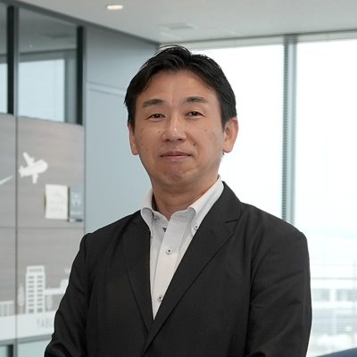
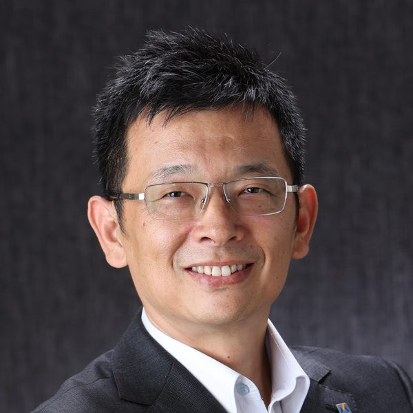
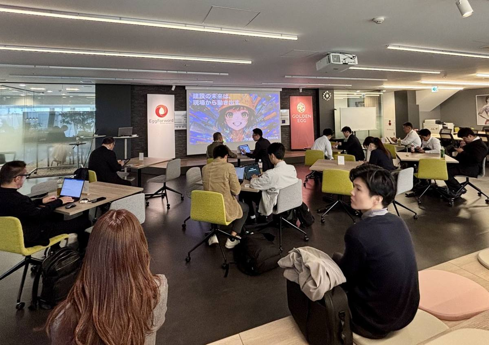

KENZOサミット 2026
建設の未来を、先頭から切り拓く。
2026.11.10（火）14:00–17:00｜東京・飯田橋｜参加費無料
建設業界のDX／ICTを先導する実践者たちが集い、取り組みと成果を共有する。先頭を走る企業の実践から学び、自社の次の一歩を考える。
現場で何を変えたのか。どのような課題に向き合い、どう乗り越えたのか。
企業の垣根を越えて知見を共有し、建設業界の未来をともに切り拓くサミットです。
対象：建設業のDX・ICT推進担当者、現場の実務責任者、業務改善に取り組む方
DX／ICTの活用が求められる一方で、実際に業務を変え、現場に定着させるには多くの課題があります。技術を導入すれば、すべてが変わるわけではありません。業務の進め方を見直し、周囲を巻き込み、試行錯誤を重ねながら、少しずつ成果につなげていく必要があります。
その過程には、実践した企業だからこそ語れる知見があります。KENZO SUMMITは、建設業界のDX／ICTを先導する企業が、自社で取り組んできた実践や成果を共有する場です。成功したことだけでなく、挑戦の過程で得た気づきや工夫も共有する。そこから生まれた学びを、次の企業の実践につなげていく。
一社の経験を、業界全体の知見へ。
それが、KENZO SUMMITの目指す姿です。
実際の取り組みから、現場で活かせるヒントを得る。
実際にDX／ICTを推進してきた企業から、取り組みの背景や進め方、成果を学びます。一般論ではなく、現場での経験に基づく知見に触れられます。
他社の挑戦を、自社の行動につなげる。
他社の取り組みを知ることで、自社の課題や改善の可能性を見つめ直せます。学んだことを、自社の業務改善やDX推進に活かすきっかけを得られます。
企業の垣根を越えて、学び合う。
同じ課題に向き合う建設業界の実務者と交流し、情報や経験を共有できます。一度の参加で終わらず、継続的に学び合える関係をつくることを目指します。
自社でDX／ICTの活用に取り組んできた建設企業の実践者が登壇。それぞれ異なる課題に向き合いながら、業務や組織を変えてきた旗手たちの経験を通じて、建設業界の変革を考えます。

2017年より、全社的なDX推進と建設現場におけるデジタル技術の活用に取り組んできました。本講演では、これまでの取り組みを振り返りながら、業務効率化や生産性向上、働き方改革などの成果をご紹介します。また、DXを推進する中で直面した課題や組織の変化にも触れ、今後のさらなるDX推進に向けた課題と展望についてお話しします。

2004年からAutodesk Revitを導入し、BIMの活用に取り組んできた実践者。BIMを単なる3Dモデルの作成にとどめず、情報マネジメントの観点から捉え、その価値と実践を共有します。
砂子組では、ICT活用、広報戦略、人材育成を通じた企業価値の向上に取り組んでいます。本講演では、先進技術の導入や若手人材の育成、地域社会との連携、企業ブランディングなど、実際の成功事例や直面した課題を交えながら、建設会社が競争力を高め、持続的に成長していくための実践的な取り組みをご紹介します。
当日のプログラム
これから取り組みを始める方も、すでに実践を進めている方も歓迎します。
KENZOサミット 2025冬「建設の未来は、現場から動き出す」より。

建設業界のDX／ICT推進に、すべての企業に共通する一つの正解があるわけではありません。だからこそ、それぞれの企業が経験を共有し、互いの取り組みから学ぶことに意味があります。
KENZO SUMMITは、実践事例を聞いて終わるイベントではなく、建設業界の実務者がつながり、知見を持ち寄り、次の挑戦を生み出すコミュニティを目指しています。
一社の実践が、次の企業のヒントになる。
その連鎖を、ここから。
開催概要
他社の実践から学び、自社の次の一歩を考える。そして、その経験をまた誰かの挑戦につなげていく。
先頭を走る企業の実践が、次の挑戦者の道しるべになる。
建設業界の未来を、ともに切り拓きましょう。
お申込みいただいた方には、開催1週間前に詳細情報をお送りします。